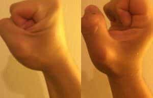

< < < Back
A Guide To Both Types Of Overhead Press – Return Of Kings
The shoulders are often considered to be a short-hand for the masculine form in particular—and rightfully so for the simple fact that men do, on average, have broader shoulders than women. And the variety of aphorisms and folk wisdoms pertaining to the deltoids: “Carrying other people on your shoulders”, “Standing on the shoulders of giants”, and (obliquely) Atlas Shrugged allude to the nature of men to bear tremendous weights upon their mighty shoulders. Any cartoonist will differentiate males and females by giving the former a broad chest and shoulders.
A broad and powerful upper body is useful for a variety of tasks, not the least of which is lifting things over your head. While having strong shoulders will help you with all of your upper body exercises, I would argue that of the two main types of upper body press (bench and overhead and all their permutations), the overhead is the more practical and useful of the two.
While my appreciation of the bench press has already been established on this website, I will acknowledge that you’re not likely to be in a position outside the gym where you’ll be on your back lifting things upwards. However, you will undoubtedly have to lift a heavy object over your head while standing on your feet at some point in your life—whether it’s moving a box into an attic or lifting a nubile young lady over your head in a ballroom is for you to decide.
Exercise Overview
There are several exercises that involve standing on your two feet and lifting a weight over your head. Like all exercises worth doing, this basic concept has a julienne of variations that can be done—two hands, one hand, wide grip, narrow grip—but the two variations that I will discuss today are the push press and the military press.
These two exercises are the best things you can do for development of shoulder strength, and the push press is one of the most practical exercises you can do for training for the rigors of daily life.
Both exercises involve lifting a loaded barbell from the chest to over the head with arms locking out, with the main difference being that the military press locks the back and legs and strictly uses the arms and shoulders, while the push press, as the name implies, uses the legs as a boost. The push press is also known as the “jerk,” as in the second component of the Olympic lift known as the “clean and jerk” (the Olympic lifts are a discipline that are even more about technique than they are sheer muscular strength, and they do require an immense amount of strength. As such they will require a separate article).
For your purposes, I will allow you to use a rack or power cage, rather than demanding that you clean the weight up from the floor to your chest. This is because an improperly performed clean is a fast way to throwing out your back or blowing out your knees.

Place the barbell on the level of the rack that is comfortable for you to lift to your chest, and load it with the amount of weight you want. As usual, I will advocate that you start light and do the exercise with proper form.
Take the barbell and hold it to your chest. This is the start position.
Some lifters prefer to keep their wrists locked and forward as seen on the left, and some prefer to roll their wrists back slightly and roll them forward on the lift. I will advise you to just do whichever feels natural to you (I find that rolling the wrists back forces the collarbone to bear some of the weight, and thus makes me lift slightly more, but if you choose this, don’t roll them back too much!)

This, the two exercises have in common, but it is of course here that they deviate from each other. The military press is the simpler of the two: Keep your back tight, and your legs locked, and lift the weight up with your arms and shoulders

I will emphasize that for both of these exercises, you must keep the back tight and straight, and look forward. Looking up at the ceiling risks having your back bend backwards (the neck is part of the spine, after all), and bending your back with 100+ pounds over your head is a very bad idea. Note that your back may bend slightly, but as long as you don’t feel pain, this is tolerable.
In addition to this, make sure that you keep your arms either level or slightly in front of your head, as keeping the arms behind the head can lead to some nasty rotator cuff injuries if you fail to lift properly.
Lock the arms out, and then lower the weight down in a controlled manner.
The Push Press
The push press is considered by some to be not as “pure” as the military press, but as it will enable you to lift more weight than the military press, I would advise doing both. Plus the matter of practicality for daily life I discussed above.
Beginning in the start position, bend the legs about 25-30 degrees. Then, keeping your neck and back straight, explosively push up with your feet and simultaneously push up with the arms, lifting the barbell over your head.
Yours truly with 205 pounds. Note that my head is forward
Do both of these exercises, and get the broad shoulders that your woman wants to snuggle up to, lest she find another guy who can provide them.
Read More: How To Do A Proper Bench Press